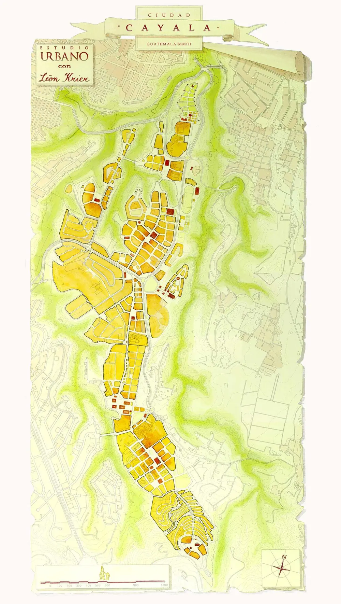
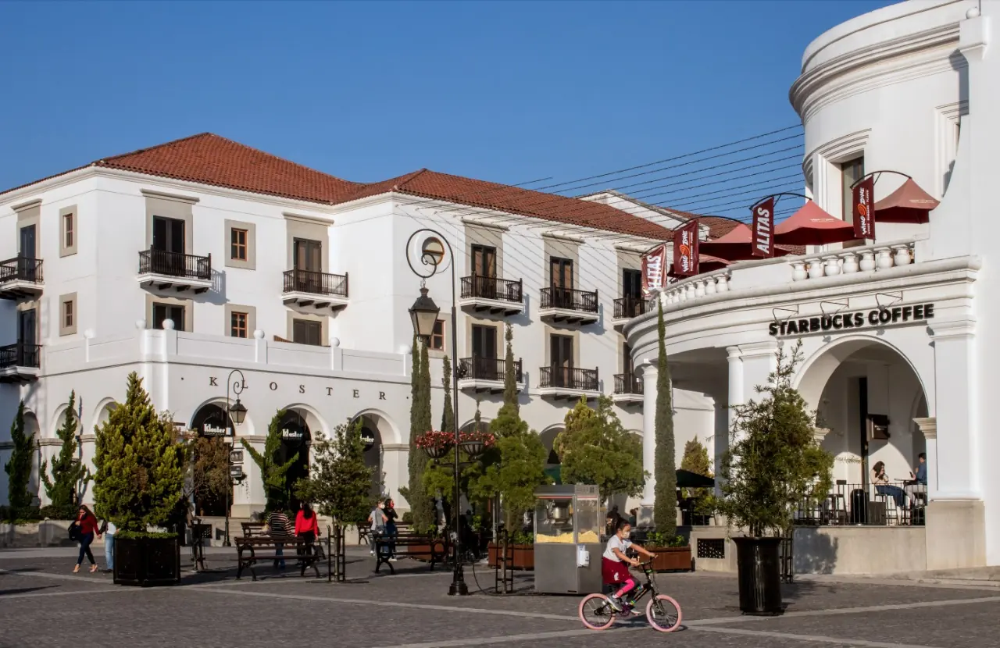
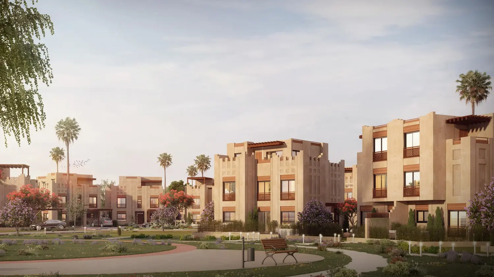
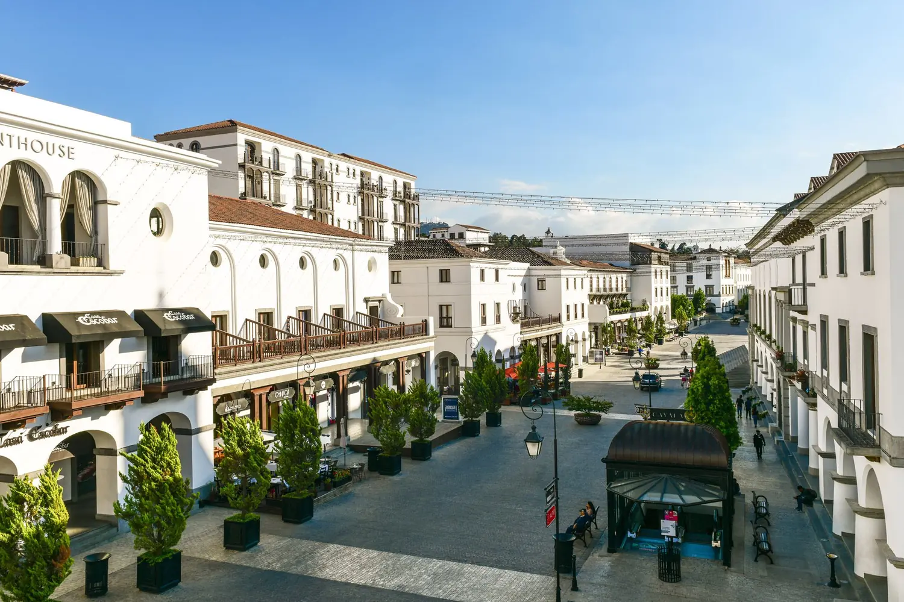
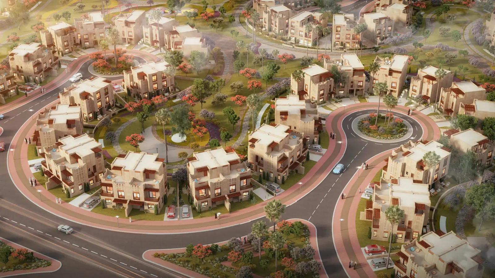
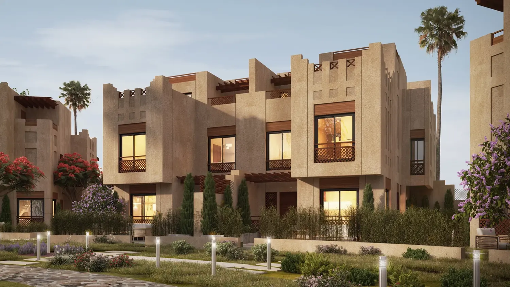

Why the Best Real Estate Developers Do Not Simply Sell Land — They Manufacture Value
Start reading
Imagine a developer constructing sixty similar apartments in one building. Fifty-nine are offered empty. One is professionally designed, furnished and presented as a complete home. The developer invests SAR 200,000 in its interior design and furniture. That apartment sells first — at a SAR 400,000 premium.
The lesson is not about furniture. It is about perception, experience and product creation. An incremental investment transformed a physical space into a more desirable product — and unlocked additional value.
The same principle can be applied not only to an apartment, but to an entire district, masterplan or piece of raw land.
One building. Sixty apartments.
At Awraq Capital, we believe this is fundamental to understanding sophisticated real estate development:
Land has a value. A destination has an economy.
The challenge is to design, finance and capture that economy.
Raw Land Is Not Yet a Product
The conventional approach to land development is straightforward: acquire land, install infrastructure, subdivide it and sell individual plots.
Afterward, every purchaser makes an independent decision. One builds apartments. Another develops retail. Another leaves the plot vacant for years. Schools may arrive later. Parks may be limited. Retail may be disconnected from pedestrian movement. Landscaping and public space can become secondary considerations.
The outcome may still be a functioning neighborhood — but not necessarily a designed economic ecosystem.
We believe the more valuable question is therefore not simply:
“How much can this land be sold for today?”
It is:
“What could this place become, and what combination of uses, investment and financing could maximize its long-term economic value?”
That question fundamentally changes the development strategy.
The same land, two outcomes
A diagram of the idea, not a real site.
The Masterplan Is Also a Financial Model
Masterplanning is often viewed primarily as an architectural exercise. Economically, however, every major planning decision can influence value.
The masterplan is therefore more than a map of buildings and roads. It can simultaneously represent an urban plan, consumer product, operating model, investment strategy and financial model.
The objective should not simply be to maximize sellable square metres. It should be to maximize the economic productivity and long-term value of the entire place.
One decision, one economic effect

- Urban plan
- Consumer product
- Operating model
- Investment strategy
- Financial model
Sometimes the Asset With the Lowest Direct Return Creates the Greatest Value
Consider a residential development containing 3,000 homes. Suppose a high-quality school, mosque, landscaped park, sports facilities and neighborhood retail collectively require SAR 200 million of investment.
Viewed individually, several of these components may not generate sufficiently attractive standalone financial returns. A park may produce almost no direct revenue.
Yet assume the ecosystem makes the community sufficiently more desirable that the average residential selling price increases from SAR 700,000 to SAR 800,000. That SAR 100,000 uplift across 3,000 units represents SAR 300 million of additional potential residential value.
A SAR 200 million investment in community infrastructure then looks very different when evaluated at destination level rather than asset level.
These figures are illustrative, but the principle is important: not every asset should be judged solely by the income it produces itself. Some assets should be evaluated by the value they create around them.
Test it on your own numbers
Illustrative. One moment in time: no phasing, financing cost, sales pace or operating income from the amenities.
The Community Can Fund the Amenity — and the Amenity Can Reprice the Community
This is where financial engineering becomes important. Rather than demanding the maximum standalone return from every component, a developer or landowner can optimize returns across the entire ecosystem.
Part of the premium generated by residential assets may economically justify investment in parks, schools, landscaping, mobility, sports facilities, public realm and placemaking. Meanwhile, recurring income from retail, offices, schools, hospitality and other operating assets can support the long-term activation of the destination.
The potential cycle is powerful:
Real estate development then becomes more than construction. It becomes economic orchestration.
- 1Better amenities
- 2Stronger demand
- 3Higher pricing power
- 4Greater footfall
- 5Stronger commercial performance
- 6Higher land values
- 7Greater capacity for reinvestment
You Are Not Selling an Apartment. You Are Selling Saturday Morning.
Families rarely purchase only concrete, glass and tiles. They imagine a life.





These experiences have economic value. This is why relatively ordinary residential units can achieve extraordinary demand when located inside exceptional communities.
The building itself does not always need to be extravagant. The life surrounding it needs to be desirable.
Premium Does Not Have to Mean Expensive
Creating an attractive destination does not necessarily require marble façades, five-star specifications or excessive capital expenditure.
Significant value can be created through relatively simple interventions:
Build the street
Switch the twelve interventions on, one at a time.
A SAR 1 million home inside a beautifully planned community may be considerably more desirable than a SAR 950,000 home surrounded only by roads and buildings. For a financed purchaser, the difference may represent a relatively modest increase in a monthly payment. The improvement in everyday life, however, can be substantial.
This is one of the most attractive forms of development value creation: modest incremental cost can sometimes produce disproportionately greater perceived and economic value.
What the premium costs the buyer each month
Illustrative: 90% of the premium financed, equal monthly instalments on a reducing balance. Not a financing offer.
Evidence From Integrated Developments
The region provides useful evidence of the strength of integrated-community models.
In Riyadh, Talaat Moustafa Group's Banan development combines residential uses with education, healthcare, commerce, sports facilities, green areas and other community amenities. TMG reported sales of approximately 4,000 units in the first five months, exceeding an earlier target of 3,000 units for the year.
In Sharjah, Arada's Aljada demonstrates the same broader principle at significant scale. The 24-million-square-foot development combines residential, commercial, hospitality, entertainment, education and sports uses in a green, walkable environment. Its Central Hub, designed by Zaha Hadid Architects, was explicitly conceived around public space, greenery, walkability, leisure, dining and community activity.
These developments illustrate an important principle: residents are not buying only the space behind their front door. They are buying access to everything around it.
One in Riyadh. One on a hillside in Guatemala.
Different continents, different buyers, different architecture. The same decision in both: plan the life first, then sell the homes around it.
Banan
A district north-east of Riyadh planned as one product. Homes, schools, clinics, mosques, shops and a sports and social club sit inside one boundary, tied together by a green strip 50 to 150 metres wide.
Figures: TMG Banan brochure, February 2025. Images: artist's impressions, Talaat Moustafa Group.
- The amenity was drawn before the first home was sold.Each residential area has a service centre in the middle, a short walk from every home.
- Green space is structure, not leftover land.A central green strip, at least 20 metres between apartment buildings, and footpaths kept apart from cars.
- Range widens the buyer pool.Apartments from 56 m², villas up to 478 m² and 500 m² family plots, all buying into the same community.
Cayalá
A hillside on the edge of Guatemala City turned into a walkable town with its own streets, squares, arcades and skyline. Its main street, Paseo Cayalá, draws people from across the city. The place itself became the anchor.
Figures: Congress for the New Urbanism; University of Notre Dame School of Architecture. Photographs: Cayalá, Guatemala City.
- Identity is the product.White walls, clay roofs and arcades on every street. Nobody mistakes it for anywhere else.
- The town centre came first.Phase one was streets, a market, a civic hall and shops with apartments above. The destination was built before most of the homes.
- Two thirds of the land was left unbuilt.Building on about a third of the site kept the green ravines as the amenity every home looks onto.
Have land that could become a place like these?
Neither benchmark was built from one cheque. We design the capital behind a destination: who funds what, when, and who keeps the upside.
From Footfall to Land Value
The same logic applies to commercial development. Retail economics are driven by movement: Where do people come from? Where are they going? What makes them stop? How frequently do they return? How long do they stay?
If these uses are located independently, each performs largely on its own. If they are planned intelligently, they can feed demand into one another. Footfall increases, commercial productivity improves and rents can become more sustainable — potentially supporting higher capital and land values.
Tenant mix therefore begins at the master-development level, not after the plots have already been sold.
The footfall clock
Add uses and watch the day fill up.
An illustrative pattern of when each use tends to bring people, not measured data.
Activate Before You Exit
A landowner does not always need to sell 100% of raw land at today's valuation.
In suitable developments, a more sophisticated strategy may be to sell part, contribute part in kind, retain strategic parcels, develop anchor assets, activate public realm and release later phases after demand has been established.
The financial question becomes: Which land should be monetized today, and which land should be retained to participate in tomorrow's value?
Depending on market conditions, phasing, infrastructure investment and execution, destination activation can potentially create materially higher residual values than an immediate raw-land disposal. The precise uplift must always be tested project by project through feasibility, sensitivity and scenario analysis.
Value creation is possible — but it is never automatic. It must be deliberately engineered.
Sell it all today, or activate first?
Illustrative. The later value arrives later and is not certain: no time value of money, financing cost, zakat or tax. Every site has to be tested on its own.
Run your own land through our raw land modelIdentity Creates Differentiation. Differentiation Creates Pricing Power.
The next layer is identity. A theme does not mean creating an artificial environment. It means giving a place a recognizable proposition:
- Architecture
- Landscaping
- Tenant selection
- Public realm
- Programming
When architecture, landscaping, tenant selection, public realm and programming reinforce one coherent idea, the destination becomes memorable.
Without identity, a project may compete predominantly on price per square metre. With a compelling identity, it can compete on the experience of living there.
That is an entirely different product — and potentially an entirely different valuation proposition.
Four Stakeholders. One Economic System.
A successful development should seek to create value simultaneously for four parties.
The financial structure must align these interests rather than optimize one stakeholder at the expense of the entire ecosystem.
Where Financial Engineering Meets Real Estate
Creating the destination is only half of the equation. The other half is determining who funds it, when the capital enters, where risk sits, how cash is recycled and how the resulting value is shared.
- Who funds it
- When the capital enters
- Where risk sits
- How cash is recycled
- How value is shared
Land in kind
Land may be contributed in kind rather than purchased entirely in cash.
Phased infrastructure
Infrastructure can be phased.
Presales
Residential presales can support development liquidity where regulations permit.
Asset-level financing
Income-producing assets may be financed separately from residential components.
Layered capital
Banks, private-credit providers, equity investors and institutional capital can participate at different stages according to their return and risk requirements.
Operators as partners
Operators may participate through leases, management agreements or joint ventures.
Capital recycling
Stabilized assets may later be sold to long-duration investors or investment funds.
Fund or SPV
A fund or SPV can align different pools of capital around specific risks and cash flows.
Pick a stage to see what can enter there.
This is what we mean by real estate financial engineering: not merely raising capital, but designing capital around the economics of the project.
The Awraq Capital Approach
At Awraq Capital, we believe the greatest opportunity in real estate is often not simply to build more square metres, but to create more economic value per square metre.
Our work begins with the financial and strategic questions behind the destination:
- What creates demand?
- Which assets generate footfall?
- Which components create recurring cash flow?
- Which assets should be developed, retained, sold or contributed?
- Where should capital be invested first?
- How can infrastructure and amenities be funded efficiently?
- What is the optimal debt-to-equity structure?
- Can different assets support different financing instruments?
- How can the landowner retain participation in future upside while reducing unnecessary capital exposure?
We then help develop financial structures and capital solutions around those answers — working with landowners, developers, investors, banks, private-credit providers, funds, operators and technical partners as required.
The objective is not simply to finance another real estate project. It is to help convert land into a product, a product into a destination, and a destination into a sustainable economic asset.
- 1Landhas a price
- 2Producthas a buyer
- 3Destinationhas an economy
- 4Sustainable economic assethas lasting value
Because the highest-value development is rarely the one containing the most concrete. It is the one where people want to live, businesses want to operate, visitors want to return and capital wants to remain invested.
Raw land has a price. Great places create value. The difference between the two is development — and the right financial structure determines who captures that value.
How Awraq Capital Can Help
Awraq Capital supports landowners, developers and investors in evaluating and structuring real estate opportunities through financial feasibility, capital structuring, debt and equity solutions, investment structuring, scenario analysis, asset monetization, investor strategy and financial advisory.
- 01Financial feasibility
- 02Capital structuring
- 03Debt and equity solutions
- 04Investment structuring
- 05Scenario analysis
- 06Asset monetization
- 07Investor strategy
- 08Financial advisory
For large or complex developments, the opportunity is rarely solved by one source of capital or one financial instrument. The right solution may require combining land, equity, debt, presales, operating cash flows and institutional capital into one coordinated strategy.
- Land
- Equity
- Debt
- Presales
- Operating cash flows
- Institutional capital
The objective is simple: structure the capital so that the development can create value — and structure ownership so that our clients can participate in that value.
Start with three answers
Opens an email to our team with your answers filled in. Nothing is stored on this page.
Awraq Capital — Structuring Capital. Creating Value.
Illustrative financial examples in this article are provided to explain development principles and should not be interpreted as forecasts, guaranteed returns or investment recommendations. Actual outcomes depend on market conditions, project design, financing, regulation and execution.
Yasser Alshahrani
Founder of Awraq Capital. Vice President of Investments at Koushan Real Estate Development, and previously Senior Vice President of Finance at the Public Investment Fund, with earlier roles at the Royal Court's Financial Committee Secretariat, the Ministry of Energy, ACWA Power and Ernst & Young. MBA, University of Texas at Arlington.